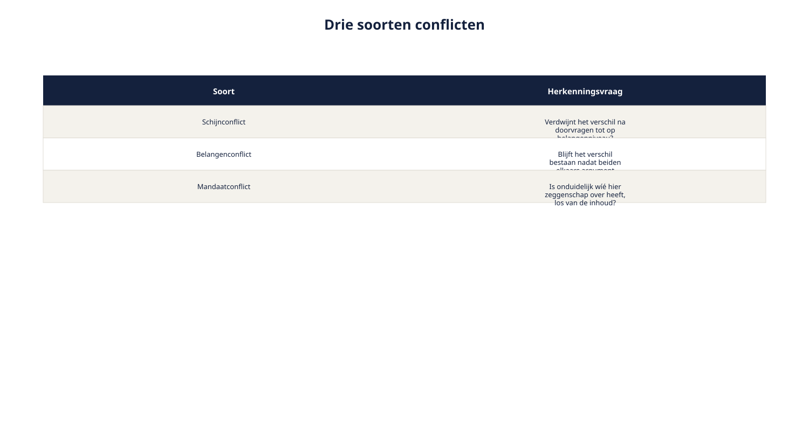
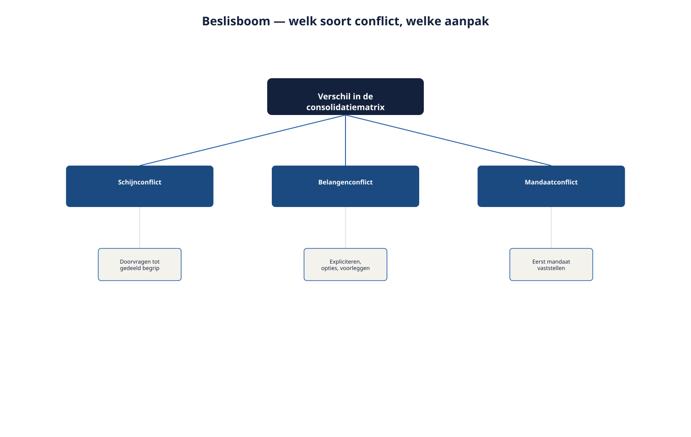

Deel 14 — Elicitation: consolidatie en conflicthantering
Reader · Ductus-cursus Requirements engineering · niveau 2 (professional) · deel 14 van 22
Cursus Requirements Engineering — Ductus. Deze cursus bereidt voor op de CPRE-certificering van IREB en is uitdrukkelijk geen vervanging van het officiële syllabus- en examenmateriaal.
Leerdoelen
Na dit deel kun je:
- input uit verschillende bronnen en technieken consolideren zonder verschillen te verdoezelen;
- drie soorten conflicten onderscheiden: schijnconflict, belangenconflict en mandaatconflict;
- per soort conflict de juiste aanpak toepassen;
- bepalen wanneer een conflict escalatie naar een hogere besluitvormer vereist;
- een besluit zo vastleggen dat het conflict en de argumentatie traceerbaar blijven;
- spanningsveld 1 (veelstemmigheid) van Wegwijzer afronden.
14.1 Alle input binnen, geen duidelijkheid
Na de vijf fasen uit deel 13 heeft Ruben een flinke stapel input: een position paper van de sociale partners, een uitgewerkt interview met Marloes, notulen van de gefaciliteerde sessie met Corrie, Petra en Sven, en de bevindingen uit de prototyping-sessie. Hij probeert dit samen te voegen tot één requirementenset voor het risicoprofiel-onderdeel van Wegwijzer — en ontdekt dat de stukken elkaar op cruciale punten tegenspreken.
Marloes wil vijf risicoprofielen, voor voldoende rekenkundige nauwkeurigheid. Sven wil er drie, omdat meer keuzes de deelnemer eerder verwarren dan helpen. Corrie, namens de deelnemersraad, wil zoveel mogelijk keuzevrijheid — ideaal gezien meer dan vijf. Petra vindt juist dat elke extra keuze een extra zorgplichtrisico is, en pleit voor zo min mogelijk.
Vier partijen, vier verschillende getallen, allemaal met een legitiem argument. Dit deel geeft je het gereedschap om hier doorheen te komen — niet door een compromis te verzinnen, maar door het verschil correct te duiden en op de juiste plek te beleggen.
14.2 Consolideren zonder verdoezelen
Consolideren is het samenbrengen van input uit verschillende bronnen tot een samenhangend geheel. Het risico bij consolideren is dat je, in de drang naar overzicht, verschillen wegpoetst — een gemiddelde neemt, of de sterkste stem laat winnen zonder de andere posities zichtbaar te houden. Dat levert schijnconsensus op: een document dat eruitziet alsof iedereen het eens is, terwijl dat niet zo is. Dit is dezelfde valkuil als een "grens open"-lijst die niet wordt bijgehouden (deel 2, niveau 1) — alleen dan op het niveau van meningen in plaats van scope.
Het instrument om dit te voorkomen is een consolidatiematrix: per onderwerp, de positie van elke belanghebbende(groep) naast elkaar, met de onderliggende reden.
| Onderwerp | Marloes (actuarieel) | Sven (UX) | Corrie (deelnemersraad) | Petra (compliance) |
|---|---|---|---|---|
| Aantal risicoprofielen | 5 — nauwkeurigheid | 3 — begrijpelijkheid | Zoveel mogelijk — keuzevrijheid | Zo min mogelijk — zorgplichtrisico |

Deze matrix "lost" niets op. Dat is precies het punt: hij maakt het verschil zichtbaar en herleidbaar, zodat de volgende stap — vaststellen wat voor soort verschil dit is — met de juiste informatie gebeurt.
14.3 Drie soorten conflicten
Niet elk verschil in de consolidatiematrix is hetzelfde soort probleem. Het onderscheiden van drie soorten bepaalt welke aanpak werkt.
Schijnconflict. De partijen lijken het oneens, maar bij doorvragen (het ijsbergmodel, deel 4 van niveau 1) blijkt het verschil te zitten in taal of perceptie, niet in het onderliggende belang. Bijvoorbeeld: twee belanghebbenden gebruiken "risicoprofiel" voor net iets andere dingen, en zodra dat helder is, blijkt hun wens grotendeels samen te vallen.
Belangenconflict. De partijen begrijpen elkaar goed, en zijn het toch fundamenteel oneens, omdat hun onderliggende belangen daadwerkelijk verschillen of elkaar uitsluiten. Het aantal risicoprofielen bij Wegwijzer is hier een schoolvoorbeeld van: Marloes en Petra hebben allebei goed geluisterd naar elkaars argumenten, en blijven het toch oneens, want nauwkeurigheid en zorgplicht-eenvoud trekken hier daadwerkelijk tegengesteld.
Mandaatconflict. De vraag is niet wát er moet gebeuren, maar wíé daarover mag beslissen. Bijvoorbeeld: is het aantal risicoprofielen een keuze van het Wegwijzer-team, van Hetty als opdrachtgever, of van het fondsbestuur samen met de sociale partners (deel 12, mandaat versus betrokkenheid)? Zolang dit niet is vastgesteld, kan geen enkele inhoudelijke discussie tot een houdbaar besluit leiden.

De herkenningsvraag per soort
- Is dit een schijnconflict? Vraag door tot op het niveau van belangen (ijsbergmodel). Verdwijnt het verschil? Dan was het taal, geen belang.
- Is dit een belangenconflict? Blijft het verschil bestaan nadat beide partijen elkaars argument volledig hebben begrepen en erkend? Dan is het een echt belangenconflict.
- Is dit eigenlijk een mandaatconflict? Is er onduidelijkheid over wíé hier zeggenschap over heeft, los van de inhoud? Dan moet die vraag eerst beantwoord worden, voordat de inhoud verder wordt behandeld.
14.4 De aanpak per soort conflict
Bij een schijnconflict: doorvragen tot gedeeld begrip. Gebruik de technieken uit deel 4 en deel 6 van niveau 1 — de waarom-vraag, het Ductus-sjabloon om te toetsen of beide partijen hetzelfde bedoelen. Vaak is dit binnen één gesprek op te lossen, zonder dat er iemand hoeft te "winnen".
Bij een belangenconflict: expliciteren, opties in kaart brengen, voorleggen. Dit is de aanpak die al in deel 3 (niveau 1) werd geïntroduceerd voor tegenstrijdige belangen, nu op grotere schaal:
- Leg het onderliggende belang van elke partij expliciet vast (niet alleen hun positie — hun "waarom").
- Breng de opties in kaart, inclusief eventuele tussenvormen (bijvoorbeeld: vier profielen als compromis tussen drie en vijf — maar bedenk dat een compromis niet automatisch de beste optie is, alleen een van de mogelijke).
- Leg dit voor aan wie mag beslissen, met de opties en hun consequenties — nooit met een eigen voorkeur van de requirements engineer erbij (de rolgrens uit deel 1, niveau 1, onverkort van kracht op programmaniveau).
Bij een mandaatconflict: eerst het mandaat vaststellen. Ga niet inhoudelijk verder voordat helder is wie beslist. Dit voelt soms als vertraging, maar het alternatief — een inhoudelijk besluit nemen dat later blijkt buiten het juiste mandaat te zijn genomen — kost meer tijd, niet minder (deel 12, paragraaf 12.3).

14.5 Escaleren: wanneer en hoe
Niet elk belangenconflict hoeft naar de hoogste besluitvormer. Een escalatiecriterium voorkomt zowel te vroeg escaleren (waardoor kleine dingen onnodig zwaar worden) als te laat escaleren (waardoor een besluit buiten het juiste mandaat wordt genomen).
Escaleer wanneer:
- het onderwerp raakt aan zorgplicht of aan de kaders uit het transitieplan (dan is Petra's of het fondsbestuur's mandaat in het spel, niet dat van het Wegwijzer-team);
- de partijen met tegengestelde belangen buiten elkaars of Rubens gezag vallen (een mandaatconflict, per definitie);
- de impact van de verkeerde keuze onomkeerbaar of kostbaar is om later te herstellen.
Beslis lager, zonder te escaleren, wanneer:
- het onderwerp een UX-detail is zonder zorgplicht- of transitieplan-raakvlak;
- de betrokken partijen binnen het Wegwijzer-team zelf vallen en een van hen een duidelijk mandaat heeft (bijvoorbeeld Milan over een technische implementatiekeuze).
Toegepast op het aantal risicoprofielen: dit voldoet aan alle drie de escalatiecriteria — het raakt zorgplicht, het raakt partijen buiten het team, en een verkeerde keuze is kostbaar om achteraf te herzien. Dit hoort dus bij Hetty en, gezien het mandaat van de sociale partners (deel 12), mogelijk zelfs bij het fondsbestuur.
14.6 Het besluit vastleggen
Zoals wijzigingsbeheer in deel 9 (niveau 1) leerde: een besluit zonder vastlegging van de overwogen opties en de argumentatie is een besluit dat later opnieuw openbreekt, omdat niemand meer weet waaróm er zus is gekozen. Bij een conflict op programmaniveau is dit risico groter, niet kleiner — meer partijen, meer kans dat iemand die niet bij het besluit was, het later ter discussie stelt.
Vast te leggen bij elk conflictbesluit:
- de posities uit de consolidatiematrix (paragraaf 14.2), ongewijzigd;
- het soort conflict en hoe dat is vastgesteld;
- de overwogen opties, inclusief die welke zijn afgevallen, en waarom;
- wie het besluit heeft genomen, en op basis van welk mandaat;
- de datum en, waar relevant, onder welke voorwaarden het besluit later heroverwogen kan worden.
Dit sluit direct aan bij traceerbaarheid uit deel 9 (niveau 1): het besluit krijgt een eigen identificatie en herkomst, precies als elke andere requirement.
Wat verandert er als je iteratief werkt?
Conflicten ontstaan niet alleen in de opzetfase — ze duiken op in elke refinement, elke sprint. Een zware, formele escalatieprocedure voor élk klein verschil van mening zou het ontwikkelteam vastzetten. De oplossing is dezelfde als bij techniekkeuze (deel 13): een lichte, snel te doorlopen versie van dezelfde drie stappen (soort conflict vaststellen, aanpak kiezen, kort vastleggen) voor de dagelijkse verschillen, met de zwaardere escalatieroute gereserveerd voor conflicten die aan de criteria uit paragraaf 14.5 voldoen.
14.7 Het aantal risicoprofielen: volledig uitgewerkt
Terug naar de opening van dit deel. Toegepast op het volledige stappenplan:
- Consolidatiematrix: de vier posities zijn vastgelegd (paragraaf 14.2).
- Soort conflict: doorvragen bevestigt dat dit geen schijnconflict is — alle vier partijen begrijpen elkaars argument, en blijven het oneens. Het is een belangenconflict, met een mandaatvraag erbovenop (wie beslist dit precies).
- Mandaat eerst vaststellen: Bram Kessels bevestigt dat dit, gezien het raakvlak met de collectieve kaders, uiteindelijk door het fondsbestuur wordt vastgesteld — maar dat het Wegwijzer-programma een onderbouwd voorstel mag indienen.
- Opties en consequenties in kaart: drie, vier of vijf profielen, elk met een korte beschrijving van wat het betekent voor nauwkeurigheid, begrijpelijkheid, keuzevrijheid en zorgplichtrisico.
- Voorleggen, niet kiezen: Ruben stelt het voorstel op met de opties en consequenties, zonder een eigen voorkeur uit te spreken, en legt het voor aan Hetty, die het namens het programma indient bij het fondsbestuur.
- Vastleggen: wat er ook wordt besloten, het besluit komt met identificatie, herkomst, de afgevallen opties en de argumentatie in de beheerbasis (deel 9, niveau 1) terecht.
14.8 Spanningsveld 1 afgerond
Met dit deel is spanningsveld 1 — veelstemmigheid — volledig gedekt: gevorderde stakeholderanalyse (deel 12) om te weten wíe waarover mag meepraten en beslissen, gevorderde techniekkeuze (deel 13) om input op een passende manier op te halen, en consolidatie en conflicthantering (dit deel) om die input tot een houdbaar, traceerbaar besluit te brengen.
De Elicitation-module (Practitioner) is hiermee compleet. Deel 15 opent de Modeling-module en daarmee spanningsveld 2: de complexiteit van de rekenregels achter het risicoprofiel.
Samenvatting
- Een consolidatiematrix brengt posities naast elkaar zonder ze te middelen of te verdoezelen.
- Drie soorten conflicten: schijnconflict (taal/perceptie), belangenconflict (echte tegenstelling), mandaatconflict (onduidelijk wie beslist) — elk met een eigen aanpak.
- Escaleer op basis van criteria (zorgplicht/transitieplan-raakvlak, partijen buiten gezag, onomkeerbaarheid), niet op gevoel.
- Elk conflictbesluit krijgt dezelfde beheerbasis als elke requirement: identificatie, herkomst, overwogen opties, besluitvormer, datum.
- Bij iteratief werken: een lichte, snelle versie van dezelfde drie stappen voor dagelijkse verschillen, de zware route gereserveerd voor wat aan de escalatiecriteria voldoet.
Begrippen
consolideren · consolidatiematrix · schijnconflict · belangenconflict · mandaatconflict · escalatiecriterium
Leeswijzer naar het volgende deel
Deel 15 opent de Modeling-module met context-, doel- en gedragsmodellen op programmaniveau — de verdieping die spanningsveld 2 (complexiteit van de rekenregels) aanpakt.